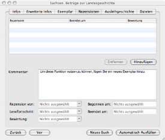

Der Reiter „Rezensionen”
Das Informationsfenster besteht aus sechs Reitern. Um das Informationsfenster
aufzurufen, klicken Sie doppelt auf den jeweiligen Bucheintrag oder klicken
Sie das Symbol „Infos einblenden”, welches sich in der Symbolleiste
befindet, an. Ihre Rezensionen oder die Rezensionen anderer können über
den Reiter „Rezensionen” hinzugefügt werden.

Verfügbare Einträge
- Kommentar
- Rezension von
- Lesefortschritt
- Bewertung - über Sterne
- Begonnen am
- Beendet am
Rezension hinzufügen
Wenn Sie eine Rezension zu der Liste hinzufügen möchten, klicken Sie zunächst die Taste „Hinzufügen” an. Danach wählen Sie den hinzugefügten Eintrag aus und geben die dazugehörigen Daten ein.